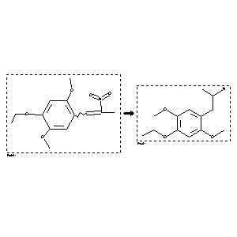

 |
| FA | RX(1); FLST(1); RX(2) |
Reaction (1 of 1)
| Reaction ID | 2190764 |
| Reactant BRN | 3061138 |
| Reactant | 1-(4-Aethoxy-2,5-dimethoxyphenyl)-2-nitro-propen |
| Product BRN | 2733083 |
| Product | 2-(4-ethoxy-2,5-dimethoxy-phenyl)-1-methyl-ethylamine |
| No. of Reaction Details | 2 |
Reaction Details (1 of 1)
| Reaction Classification | Preparation |
| Reagent | LiAlH4, H2SO4 |
| Solvent | tetrahydrofuran |
| Other Conditions | Ambient temperature |
| Citation Pointer | 5595464; Journal; Glennon, Richard A.; Raghupathi, Reva; Bartyzel, Piotr; Teitler, Milt; Leonhardt, Sigrun; JMCMAR; J.Med.Chem.; EN; 35; 4; 1992; 734-740; |
Reaction Details (2 of 1)
| Reaction Classification | Preparation |
| Other Conditions | (reduction) |
| Citation Pointer | 81073; Journal; Shulgin,A.T.; JMCMAR; J.Med.Chem.; EN; 11; 1968; 186-187; |
Reference (1 of 2)
| Citation Number | 81073 |
| Document Type | Journal |
| Authors | Shulgin,A.T. |
| CODEN | JMCMAR |
| Journal Title | J.Med.Chem. |
| Language Code | EN |
| (Series) Volume | 11 |
| Publication Year | 1968 |
| Page | 186-187 |
Reference (2 of 2)
| Citation Number | 5595464 |
| Document Type | Journal |
| Authors | Glennon, Richard A.; Raghupathi, Reva; Bartyzel, Piotr; Teitler, Milt; Leonhardt, Sigrun |
| CODEN | JMCMAR |
| Journal Title | J.Med.Chem. |
| Language Code | EN |
| (Series) Volume | 35 |
| Number | 4 |
| Publication Year | 1992 |
| Page | 734-740 |